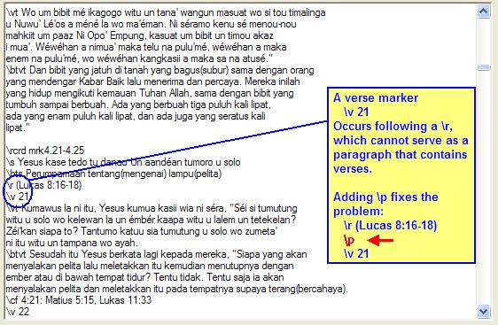

OurWord Help
Import
Error: Missing Paragraph Marker
This error occurs when a verse marker (\v) occurs outside of a
paragraph that can contain verses. Examples of paragraphs that cannot contain
verses include:
\s)\mt, \st)\r)\cat, \ref) and picture captions (\cap)An example of this error:

The cure is to insert a paragraph marker prior to the offending verse marker.
This will frequently be a \p (normal paragraph), but could also
be one of the various quote paragraphs (\q, \q1, \q2,
\qc).
After you make the correction, click on the Try Again button to instruct OurWord to resume importing the book; or alternatively you can click on Cancel to abandon the import and fix it in some other editor.
Updated as of Version 1.0.